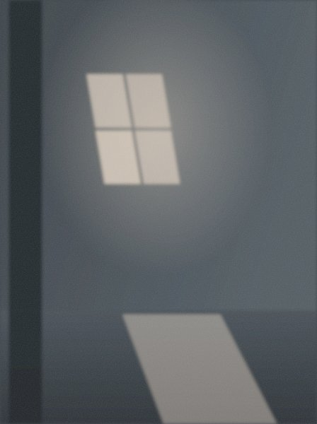
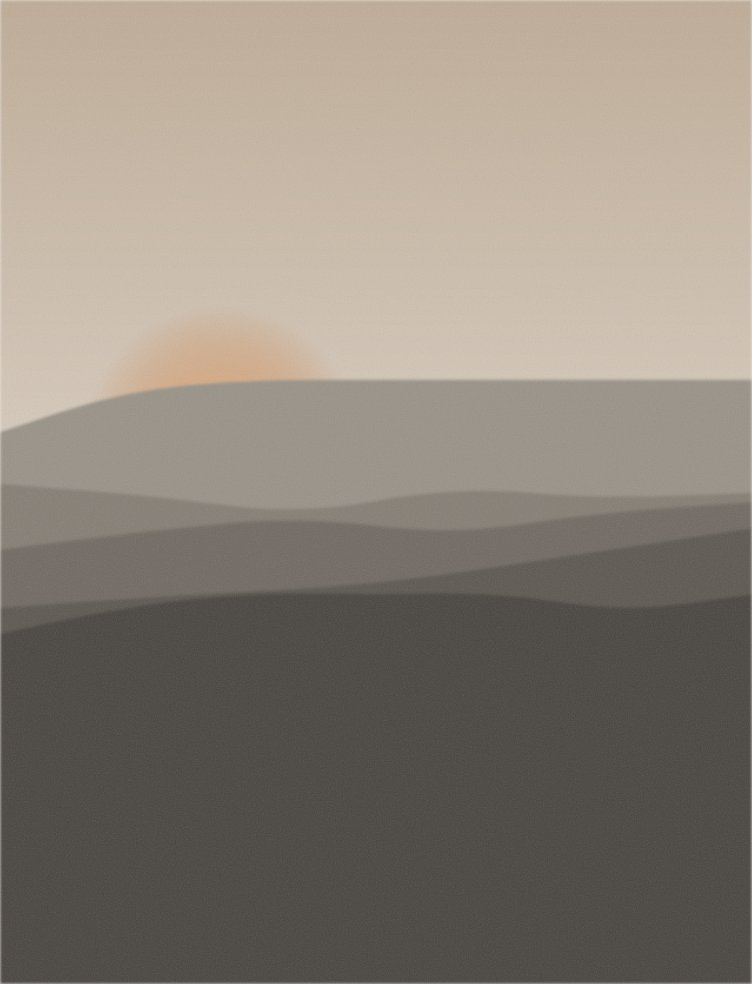
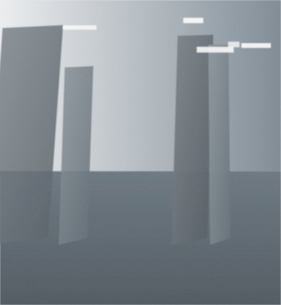
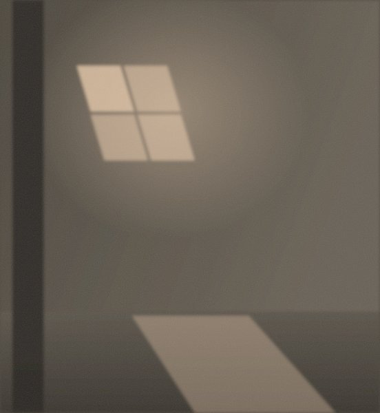

一份源文件
三种交付
One source, three deliverables.




01A
02A
03A
04A
05A
浏览器里直接演示，再一键导出可编辑 PPTX、矢量 PDF 与逐页 PNG。
One source, three deliverables.

01A
02A
03A
04A
05A
浏览器里直接演示，再一键导出可编辑 PPTX、矢量 PDF 与逐页 PNG。



16
R1–R16，从版式注册一路查到 PPTX 导出一致性
20
其中 12 个是每种风格必须覆盖的核心角色
3
PPTX · PDF · PNG，HTML 是唯一的源
Source — scripts/validate.mjs · scripts/lib/roles.mjs · 图为示意图
10 / 18
from outline to deck.



No. 1
看风格画廊，按场合挑一种，整份 deck 只用这一种。
No. 2
按内容形状找角色，复制版式骨架，只换文字和图片。
No. 3
查类名、字号、出处与导出一致性，错误必须清零。
No. 4
一键得到可编辑 PPTX、矢量 PDF 与逐页 PNG。
Source — SKILL.md 工作流 · 图为示意图
13 / 18